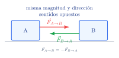
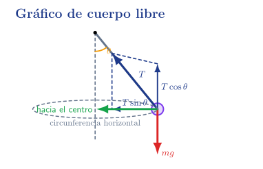
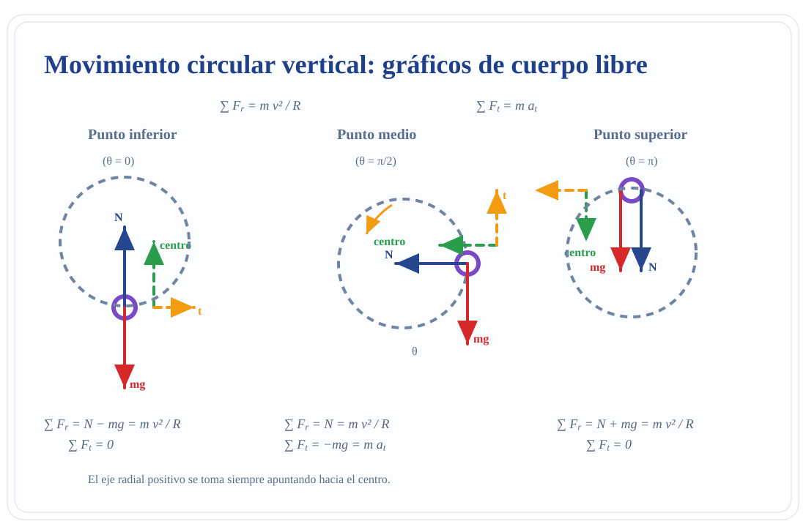

Dinámica
Presentación introductoria del apunte de la Unidad 3.
Recorrido de la unidad
1. Introducción contextualizada
La cinemática describe cómo se mueve un cuerpo; la dinámica estudia por qué cambia o no cambia ese movimiento.
2. Objetivos de aprendizaje
Comprender fuerzas
Reconocer módulo, dirección, sentido y punto de aplicación.
Aplicar Newton
Reposo, MRU, aceleración y fuerza neta.
Dibujar DCL
Aislar el cuerpo y representar fuerzas externas.
Analizar rozamiento
Distinguir estático, cinético, útil y no deseado.
Calcular torque
Estudiar momentos de fuerza y equilibrio rotacional.
3. Importancia técnica
Lo que debe poder interpretar el técnico
- Aceleración de cintas.
- Adherencia de envases.
- Fuerzas sobre rampas.
- Cargas suspendidas.
- Torque en mezcladores.
- Esfuerzos en tapas y compuertas.
Variables medidas o controladas
Permiten anticipar fallas, ajustar operación y proteger el proceso.
4. Mapa conceptual de la unidad
interacción vectorial
fuerza y aceleración
cuerpo aislado
adherencia o pérdida
tendencia al giro
fuerzas y torques nulos
5. Fuerzas e interacciones
Una fuerza es una interacción mutua entre dos cuerpos o entre un cuerpo y su entorno.

5.1 Tipos de fuerzas frecuentes
Fuerzas de contacto
- Fuerza aplicada \(\vec F\)
- Tensión \(\vec T\)
- Normal \(\vec N\)
- Rozamiento \(\vec f\)
Fuerzas a distancia
- Gravitatoria \(\vec F_g\)
- Eléctrica
- Magnética
- Nucleares
5.2 Fuerza gravitatoria, peso y \(g\)
Ley universal
Peso cerca de la Tierra
Modelo local
6. Leyes de Newton: idea previa
Las leyes de Newton relacionan fuerzas externas con reposo, movimiento uniforme o aceleración.

6.1 Primera ley: inercia
Si la fuerza externa neta es nula, el cuerpo permanece en reposo o en movimiento rectilíneo uniforme.
Condición de validez
La primera ley se aplica directamente en sistemas de referencia inerciales. En marcos acelerados o rotantes aparecen efectos aparentes.
Sistemas inerciales y no inerciales
Inercial
Reposo o velocidad constante.
La ley de inercia se verifica directamente.
No inercial lineal
Vehículo que acelera.
Puede aparecer una fuerza ficticia para describir el movimiento desde ese marco.
No inercial rotante
Plataforma giratoria.
La trayectoria observada depende del sistema de referencia.
6.2 Segunda ley: fuerza neta y aceleración
La aceleración tiene la dirección de la fuerza neta.
Simulación rápida
6.3 Tercera ley: acción y reacción
Las fuerzas aparecen en pares de interacción.

7. Hipótesis simplificativas y modelos
Tierra plana local
Gravedad uniforme y vertical.
Partícula
Importa la traslación, no la rotación.
Cuerpo rígido
Importan forma, puntos de aplicación y torques.
Cuerdas y poleas ideales
Modelos sin masa ni rozamiento, salvo indicación.
7.4 Diagrama de cuerpo libre
- Definir el cuerpo analizado.
- Aislarlo del entorno.
- Dibujar sólo fuerzas externas.
- Elegir ejes convenientes.
- Descomponer fuerzas inclinadas.
- Plantear ecuaciones.

8. Componentes, fuerza neta y equilibrio traslacional
Fuerza neta
Componentes
Equilibrio
9. Rozamiento
El rozamiento puede ser útil o perjudicial.

Simulación: rozamiento y pérdida de adherencia
Rozamiento en cinta
Lectura didáctica
Mientras la fuerza requerida sea menor que \(f_{s,\max}\), no hay deslizamiento. Si se supera ese límite, aparece deslizamiento y el modelo cambia.
Plano inclinado: componentes del peso
Los ejes se eligen paralelos y perpendiculares al plano para simplificar el problema.

Simulación: plano inclinado con rozamiento
Plano inclinado
Modelo usado
Si el resultado es negativo, el deslizamiento no se inicia bajo esa hipótesis.
10. Dinámica del movimiento circular
Fuerza neta radial
Aceleración centrípeta
No es una fuerza nueva
La fuerza centrípeta es la resultante radial de fuerzas reales.
Casos de dinámica circular



Simulación: fuerza centrípeta y adherencia
Envase en mesa giratoria
Criterio
Si \(F_c>f_{s,\max}\), el envase desliza.
11. Elasticidad y ley de Hooke
Dentro del rango elástico lineal, la fuerza recuperadora es proporcional a la deformación.
Fuerza elástica
11.2 Aplicaciones de Hooke en alimentos
Soportes antivibratorios
Reducen transmisión de vibraciones.
Celdas de carga
Relacionan deformación y medición de peso.
Alimentadores vibratorios
Combinan elasticidad y oscilación.
Envases
Compresión dentro de límites elásticos.
12. Dinámica del movimiento armónico simple
El MAS aparece cuando la aceleración es proporcional y opuesta a la elongación.
Lectura dinámica
- En \(x=0\): equilibrio y rapidez máxima.
- En \(x=\pm A\): velocidad instantánea nula y aceleración máxima.
12.1 Resorte ideal: frecuencia natural
A mayor rigidez, mayor frecuencia natural. A mayor masa, menor frecuencia natural.
Interpretación industrial
La relación entre masa, rigidez y frecuencia ayuda a analizar vibraciones en soportes, zarandas, alimentadores y estructuras.
12.2 Péndulo, amortiguamiento y resonancia
Péndulo simple
Válido para ángulos pequeños en radianes.
Amortiguamiento
La amplitud disminuye por disipación de energía.
Resonancia
La respuesta crece cuando la excitación se acerca a la frecuencia natural.
13. Cantidad de movimiento lineal e impulso
La cantidad de movimiento permite analizar choques, impactos y cambios bruscos de velocidad.

13.2 Centro de masa
El centro de masa permite describir el movimiento global de un sistema de partículas.
Uso técnico
Ayuda a simplificar cargas distribuidas, conjuntos de piezas, recipientes parcialmente llenos y cuerpos con masa extendida.
14. Sistemas de partículas y cuerpo rígido

15. Torque: tendencia al giro
El torque aumenta con la fuerza, con la distancia al eje y con el brazo perpendicular.

Simulación: torque
Momento de fuerza

15.1 Momento de inercia y momento angular
Momento de inercia
Depende de cómo se distribuye la masa respecto del eje.
Momento angular
Conservación
Si el torque externo neto es nulo, el momento angular se conserva.
15.5 Aplicaciones en equipos alimentarios
Mezcladores
Torque resistente, viscosidad, selección de motor.
Centrífugas
Alta velocidad angular, balanceo y vibraciones.
Rodillos y tambores
Momento de inercia, aceleración angular y carga.
16. Equilibrio rotacional y equilibrio completo
Un cuerpo rígido está en equilibrio completo si no acelera lineal ni angularmente.

Simulación: equilibrio rotacional
Tapa o barra en equilibrio
Condición usada
A mayor brazo de sostén, menor fuerza necesaria.
17. Aplicaciones industriales alimentarias
| Sistema | Fuerzas o torques | Impacto |
|---|---|---|
| Cinta transportadora | Peso, normal, rozamiento, fuerza motriz | Estabilidad y sincronización |
| Rampa o tolva | Peso, normal, rozamiento | Flujo estable y prevención de atascos |
| Mezclador | Torque motor y fuerzas resistentes | Homogeneidad y seguridad |
| Tapa o compuerta | Peso, bisagra y fuerza de sostén | Ergonomía y prevención de accidentes |
| Soportes vibratorios | Fuerza elástica y amortiguamiento | Reducción de vibraciones |
18. Ejemplos resueltos: traslación
1. Producto sobre cinta
\(m=2.0\,kg\), velocidad constante.
2. Arranque con rozamiento
\(m=3.0\,kg\), \(a=1.2\,m/s^2\), \(\mu_s=0.50\).
3. Rampa sin rozamiento
\(m=1.5\,kg\), \(\theta=25^\circ\).
18. Ejemplos resueltos: tensión y torque
4. Tensión en soporte
Tolva de \(12\,kg\).
5. Torque en paleta
\(r=0.18\,m\), \(F=35\,N\).
6. Tapa en equilibrio
Peso \(80\,N\) a \(0.30\,m\); sostén a \(0.60\,m\).
19. Interpretación de diagramas
20. Errores frecuentes
Masa y peso
Confundir kg con N.
Normal
Suponer siempre \(N=mg\).
Rozamiento estático
Usar \(f_s=\mu_sN\) cuando corresponde \(f_s\leq\mu_sN\).
Torque
Olvidar el brazo perpendicular o \(\sin\theta\).
Equilibrio
Creer que \(\sum F=0\) garantiza \(\sum \tau=0\).
21. Preguntas conceptuales para discusión
22. Ejercicios numéricos propuestos
| # | Situación | Dato central | Respuesta orientativa |
|---|---|---|---|
| 1 | Peso de caja | \(m=8\,kg\) | \(P\approx78.5\,N\) |
| 2 | Fuerza neta | \(m=12\,kg, a=0.5\,m/s^2\) | \(F=6\,N\) |
| 4 | Rozamiento máximo | \(m=5\,kg, \mu_s=0.4\) | \(19.6\,N\) |
| 6 | Plano sin rozamiento | \(\theta=30^\circ\) | \(a=4.9\,m/s^2\) |
| 9 | Torque | \(r=0.25\,m, F=40\,N\) | \(10\,N\,m\) |
23. Simuladores interactivos de la unidad
1. Newton
Masa, fuerza aplicada y resistencia.
2. Rozamiento
Adherencia o deslizamiento.
3. Plano inclinado
Ángulo, rozamiento y aceleración.
4. Torque
Fuerza, radio y ángulo.
5. Equilibrio
Fuerza de sostén y brazos.
24. Actividad práctica o simulada
25. Actividad integradora
Consigna integradora
Identificar fuerzas, construir diagramas, calcular aceleraciones, rozamientos y torques, detectar riesgos mecánicos y justificar mejoras.
26. Infografía 1 · Fuerzas e interacciones

26. Infografía 2 · Newton y fuerza neta

26. Infografía 3 · Diagramas y componentes

26. Infografía 4 · Rozamiento

26. Infografía 5 · Torque y equilibrio rotacional

26. Infografía 6 · Hooke y MAS

27. Resumen final
28. Glosario breve
| Término | Significado |
|---|---|
| Fuerza | Interacción vectorial capaz de modificar movimiento o deformar. |
| Masa | Medida de inercia. |
| Peso | Fuerza gravitatoria sobre un cuerpo. |
| Normal | Fuerza perpendicular de contacto. |
| Rozamiento | Fuerza tangencial asociada al contacto. |
| Torque | Tendencia de una fuerza a producir giro. |
Cierre y uso del material
Material didáctico complementario para Física aplicada a la Tecnología de Alimentos.
Fuentes de trabajo
- Apunte Unidad 3 · Dinámica.
- Tippens, Física: conceptos y aplicaciones.
- Bibliografía general de Física universitaria.